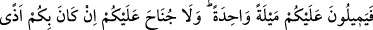
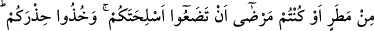
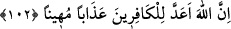

102- Sen de içlerinde bulunup onlara namaz kıldırdığın zaman, onlardan bir kısmı
seninle berâber namaza dursunlar, silahlarını da yanlarına alsınlar, böylece (namazı
kılıp) secde ettiklerinde arkanıza geçsinler. Sonra henüz namaz kılmamış olan
diğer grup gelsin ve seninle berâber namazlarını kılsınlar. Onlar da ihtiyat
tedbirlerini ve silahlarını alsınlar. O kâfirler arzu ederler ki siz silahlarınızdan ve
eşyanızdan gafil olsanız da üzerinize birden baskın yapsalar. Eğer yağmurdan
eziyet çekerseniz yâhut hasta olursanız silahlarınızı bırakmanızda size günah
yoktur. Yine de tedbirinizi alın. Şüphesiz Allah, kâfirler için alçaltıcı bir azap
hazırlamıştır.
Ey Muhammed! “Sen de” korku halinde olan mü’minlerin “içlerinde bulunup onlara
namaz kıldırdığın zaman”
İbn Abbas (r. anhümâ) der ki: “Müşrikler, Zâtü’r-Rikâ’ gazvesinde Rasûlullah
(s.a.v.)’in imam olup ashâbı ile öğle namazına durduklarını gördükleri zaman onlara
hücum edip savaşmadıklarına pişman oldular. Bir kısmı, İkindi namazını kasdederek
“Bırakın onları, bu namazdan sonra kılacakları bir namaz daha var ki onlar için
babaları, çocukları ve mallarından daha sevgilidir. Bu namaza kalktıklarını görürseniz
onları kıskıvrak yakalayıp öldürün.” dediler. Bunun üzerine iki namazın arasında
Cebrâil (a.s.) bu âyetlerle indi ve korku namazının nasıl kılınacağını Hz. Peygamber
(a.s)’a öğretti. Allah onların maksat ve tuzaklarını bu şekilde ona bildirdi.
Cumhur, korku namazının Rasûlullah (s.a.v.)’den sonra da bütün ümmet için sabit ve
meşru olduğu görüşünde birleşmiştir. Allah Teâlâ Rasûlullah (s.a.v.)’e korku halinde
namazın nasıl kılınacağını öğretmesi, ümmetin ona uyması içindir. Böylece ona (a.s)
olan hitap mü’minleri de şâmildir.
“Keşşaf”ta şöyle denilmiştir: “Muhakkak ki imamlar her asırda Rasûlullah (s.a.v.)’in
vekilleri ve onun yaptığı işleri idâre eden kimselerdir. Ona olan bu hitap bütün
imamları da şâmildir. Rasûlullah (s.a.v.)’in korku hâlinde hâzır olan cemâate imam olup
namaz kıldırdığı gibi o imam da hâzır bulunan cemâate namaz kıldırır. “Onların
mallarından kendilerini temizleyecek sadaka al.” (Tevbe, 9/103) âyetinin hükmü
sadece Rasûlullah (a.s.)’e değil, ondan sonraki imamlara da mahsus olduğu gibi, korku
namazı da böyledir. Artık bu îzahtan sonra; “Âyette onun aralarında olması şart
koşulduğuna göre korku namazı Hz. Peygamber (a.s)’a mahsustur” diyen kimsenin sözü
böylece reddedilmiş olmaktadır.”
“Onlardan bir kısmı seninle berâber namaza dursunlar, silahlarını da yanlarına
alsınlar.” Onları iki bölüğe ayırdıktan sonra diğer bölük düşmanın karşısında, sizi